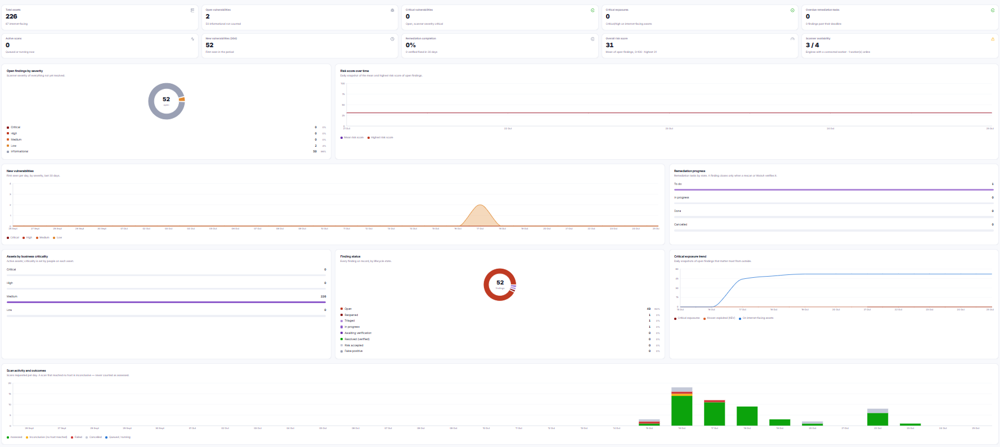

See the risk.
Understand the threat.
Act with confidence.
One connected approach to critical infrastructure intelligence, vulnerability management, threat intelligence and security operations—powered by purposeful automation.

Security data is everywhere.
Decisions shouldn't be fragmented.
Disconnected scanners, threat feeds and incident tools make it harder to see what matters. NovrSOC is designed to replace that sprawl — connecting signals to assets, assets to business risk, and risk to action in one platform.
See how the platform connects the dots ↗One platform. Four pillars.
A clearer security picture.
Purpose-built capabilities that work as one operational system.
Critical infrastructure intelligence
See risk through a national, sector, subsector and organisation lens.
Explore capabilityContinuous exposure management
Connect asset discovery, risk scoring, scanning and remediation tracking.
Explore capabilityEvidence-led threat context
Correlate indicators, advisories and local intelligence with your environment.
Explore capabilityInvestigate. Decide. Respond.
Turn alerts into cases and governed response workflows, supported by AI.
Explore capabilityFrom a security signal
to a governed response.
Security automation should accelerate analysts, not bypass judgement. NovrSOC connects alert context, investigation, prioritisation and approval-aware response.
Explore SecOps automation ↗People, process and technology.
Designed to work together.
Cybernovr combines security engineering with a practical focus on monitoring, exposure reduction, intelligence and continuous improvement.
Operational visibility
Connect security telemetry and findings across environments.
Prioritised action
Translate technical findings into meaningful work.
Clear communication
Give analysts and executives the context they need.
Better visibility. Better decisions.
Stronger security.
Explore how NovrSOC by Cybernovr can connect your security operations.